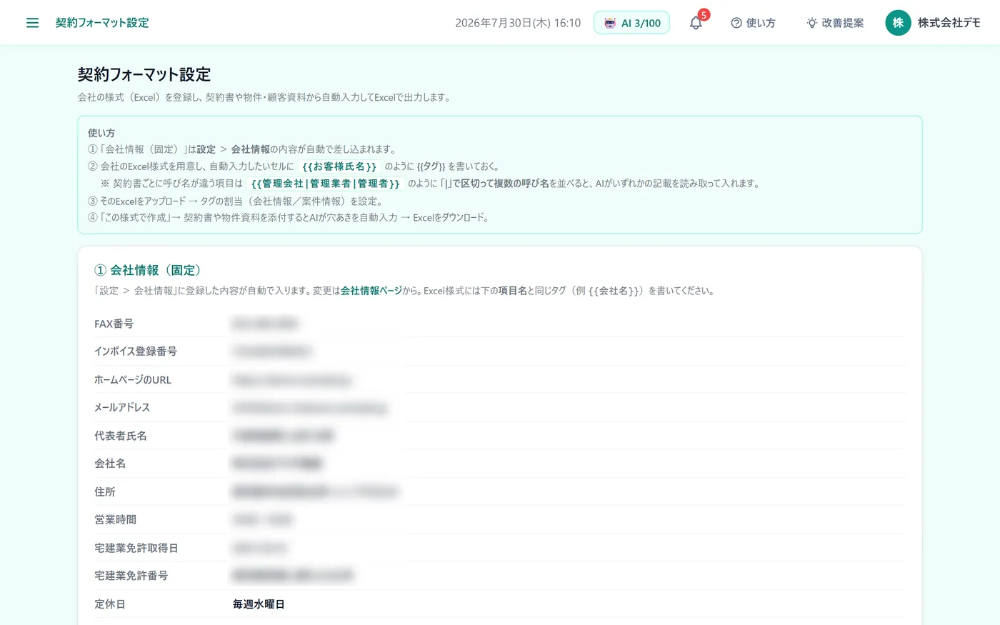
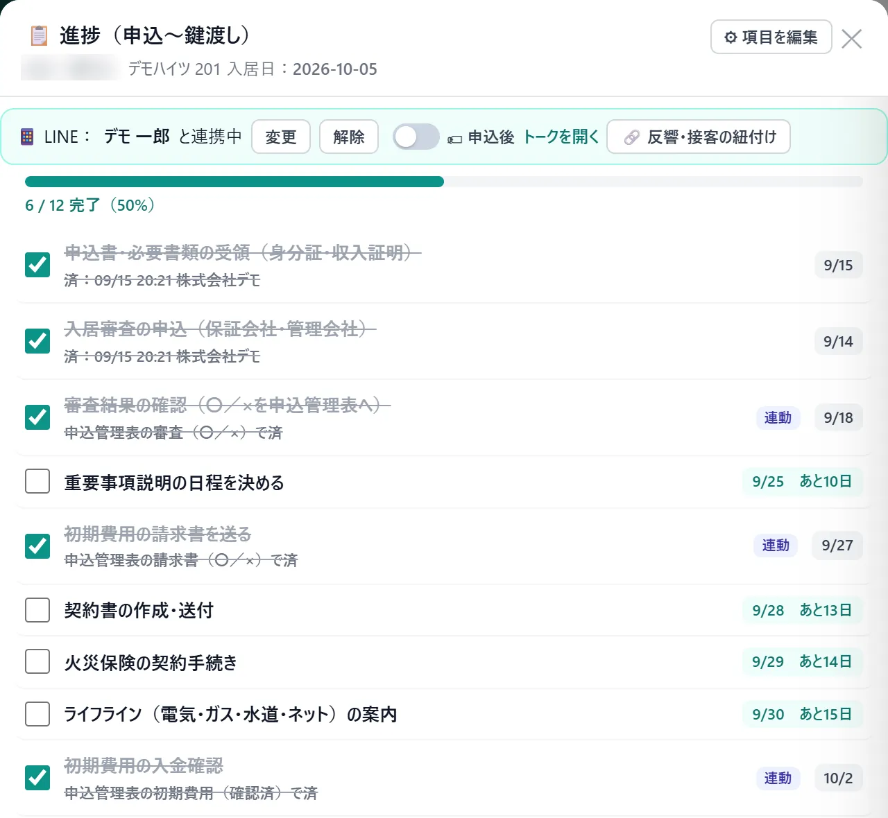

こんな困りごとに
- 契約書に、お客様の名前や住所を毎回手で書き写している
- 書類ごとに入力して、書き間違いが起きる
- 鍵渡しまでの手続きに、抜け漏れがないか心配
この機能でできること
- 自社のExcelの書式に、お客様の情報と会社情報を自動で差し込み
- 作った書類はExcelで出力。まとめて保存（ZIP）もできる
- 申込から鍵渡しまでの手続きを、入居日から逆算した期限つきで管理
メニューの場所左メニュー「各種設定 › 契約フォーマット」「事務作業 › 契約管理」
!オプション機能です
契約書類を作る「契約管理」はオプションです。
ご利用の条件は、お気軽にお問い合わせください。
使い方（3ステップ）
-
1
書式を登録する
先に会社情報を登録しておきます。自社のExcelの書式の差し込みたい場所に {{会社名}} のような目印を書いて、「各種設定 › 契約フォーマット」の「📄 Excelをアップロード」から登録します。

-
2
お客様を選んで書類を作る
「事務作業 › 契約管理」には、申込済みのお客様が並びます。各行の操作ボタンから、登録した書式で契約書類を作り、画面で直してからExcelで出力します。
-
3
鍵渡しまでを管理する
「鍵渡しまで」の欄を押すと、申込書類の受領から鍵渡し・入居までのチェックリストが開きます。期限は入居日から逆算して表示され、期限を過ぎた項目は赤くなります。

よくある質問
保証会社や管理会社の申込用紙（PDF）にも入力できますか？
できます。「事務作業 › 申込書類作成」で申込用紙のPDFを登録すると、用紙の入れたい場所をクリックして、そのまま文字を入力できます。元のPDFは加工しません。
チェックリストの項目は自社用に変えられますか？
変えられます。チェックリストの「⚙ 項目を編集」から、項目の追加・並び替え・使わない項目を外すことができます（オーナー・マネージャー・店長）。